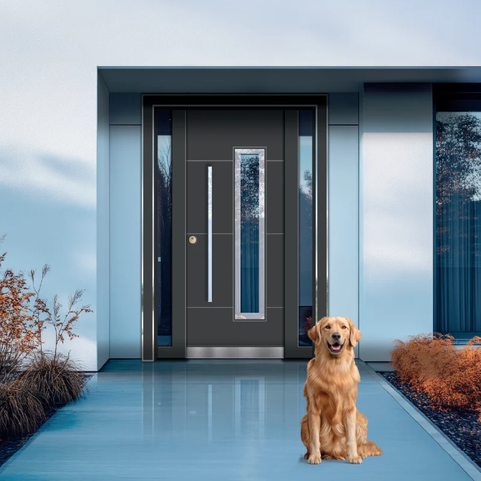

يبدأ رقي امتلاك الفilla باختيار الباب المناسب. باب المدخل — أول انطباع عن منزلك — قرار حاسم من حيث الأمان والجمال. كيف تختار من بين مئات النماذج؟ في هذا الدليل نجمع كل ما تحتاج معرفته.
لماذا يتطلب باب الفilla اختياراً خاصاً؟
على عكس باب الشقة العادية، يتحمل أبواب الفillas مسؤوليات أكبر. تتعرض للطقس على مدار الفصول، وتُمثل عنصراً تصميمياً يعكس عمارة منزلك.
غالباً ما تُنتج بمقاسات خاصة خارج المقاييس القياسية، ما يتطلب دقة أكبر عند الاختيار.
7 معايير أساسية لاختيار باب الفilla
1. معايير وفئات الأمان
الأمان أهم معيار. وفق معايير TSE تُصنَّف الأبواب الفولاذية إلى فئات A وB وC وD. يُفضَّل للفilla الحد الأدنى فئة C والمثالي فئة D.
خصائص باب فئة D:
- سماكة صفيحة لا تقل عن 2 mm
- نظام قفل متعدد النقاط (5 نقاط على الأقل)
- إطار مقوّى
- مفصلات anti-panic
- جسم مدعّم بالفولاذ
لمزيد من التفاصيل، راجع مجموعة أبواب الفillas.
2. المقاس والأبعاد
أبواب الفillas أكبر من أبواب الشقق. المقاسات الشائعة:
- جناح واحد: عرض 100–120 سم، ارتفاع 220–240 سم
- جناح مزدوج: عرض 180–240 سم، ارتفاع 220–260 سم
- مقاس خاص: حسب المشروع المعماري
راعِ عرض وارتفاع مدخل المنزل عند الاختيار؛ الباب الكبير جداً قد يبدو غير متناسب.
3. جودة المواد
المواد المستخدمة تحدد المتانة مباشرة:
اتصل بنا
اطلب عرض سعر لمشروعك
احصل على معلومات عن النماذج والمقاسات وخيارات التركيب لأبواب الفillas.
4. التصميم والجمال
يجب أن يكمل باب الفilla عمارة المنزل بل ويبرزها. سواء اخترت أسلوباً عصرياً أو كلاسيكياً أو ريفياً أو بسيطاً، يجب أن يتناسق مع المفهوم العام.
تصاميم شائعة:
- أنماط بالليزر: مظهر عصري أنيق
- تفاصيل زجاجية: إضاءة طبيعية واتساع
- مظهر خشبي: دفء وطابع طبيعي
- بسيط: خطوط هادئة وأثر قوي
اطّلع على نماذج أبواب الفillas لاختيار التصميم المناسب.
5. مقاومة الطقس
أبواب الفillas المعرّضة للخارج تتأثر بالمطر والثلج والشمس والرياح:
- طلاء مقاوم للأشعة فوق البنفسجية
- نظام منع تسرب الماء
- عزل حراري جيد
- مواد مقاومة للصدأ
6. أنظمة القفل والأمان
لم يعد القفل الميكانيكي وحده كافياً:
- قفل متعدد النقاط: 5–7 نقاط
- قارئ بصمة: دون حمل مفاتيح
- قفل برمز: فتح بالرمز
- تحكم عن بُعد: عبر تطبيق جوال
- تكامل مع الإنذار: ربط بنظام الأمان
7. عزل الصوت والحرارة
- عزل صوت: تقليل الضوضاء الخارجية 60% على الأقل
- عزل حراري: تقليل فقد الطاقة
- إحكام الهواء: منع دخول الرياح والغبار
أنواع أبواب الفillas
باب بجناح واحد
مثالي للمداخل القياسية. عادة 100–120 سم عرضاً. عملي للاستخدام اليومي.
باب بجناحين
للمداخل الواسعة والراقية. يصل العرض إلى 240 سم. يسهل نقل الأثاث الكبير.
أبواب Pivot
مفضلة في العمارة الحديثة. تدور على محور علوي وسفلي. مناسبة للمقاسات الكبيرة بمظهر بسيط مؤثر.
أبواب فillas بالليزر
أنماط بالقطع بالليزر تجمع الأمان والجمال. مع تفاصيل زجاجية تبدو مذهلة.
اختيار اللون والسطح
يجب أن يتناسق لون الباب مع واجهة المنزل:
| اللون | الأسلوب المعماري | الخاصية |
|---|---|---|
| أسود | عصري، بسيط | أنيق ومرموق |
| رمادي Anthracite | معاصر، صناعي | محايد وراقي |
| أبيض | كلاسيكي، متوسطي | نظيف ومضيء |
| مظهر خشبي | ريفي، طبيعي | دافئ ومرحّب |
| ذهبي/برونز | فاخر، كلاسيكي | مميز وفخم |
نطاقات الأسعار والميزانية
تختلف الأسعار حسب المقاس وجودة المواد والتصميم والمواصفات:
- اقتصادي: مقاس قياسي وتصميم بسيط
- متوسط: تصميم خاص ومواد جيدة
- فاخر: مقاس خاص وأنظمة ذكية وتفاصيل راقية
تذكّر: باب الفilla استثمار. الباب الجيد يخدم 20–30 سنة. فكّر في القيمة طويلة الأمد لا التوفير قصير المدى.
التركيب والتشغيل
- أخذ المقاس: قياس دقيق في الموقع
- الإنتاج: 2–4 أسابيع (أطول للتصاميم الخاصة)
- إزالة الباب القديم: بعناية
- تركيب الإطار: بثبات واستقامة
- تركيب الباب: ضبط واختبار
- فحص نهائي: القفل والمفصلات والعزل
نصائح الصيانة
- ادهن المفصلات مرتين سنوياً
- نظّف آلية القفل بانتظام
- امسح السطح بقطعة ناعمة دون مواد كاشطة
- نظّف الزجاج بمنظف مخصص
- افحص الباب سنوياً لدى متخصص
أسئلة شائعة
ما فئة الأمان الكافية لباب الفilla؟
الحد الأدنى فئة C، والمثالي فئة D التي توفر أعلى معيار أمان.
أيهما أفضل: جناح واحد أم مزدوج؟
يعتمد على عرض المدخل وعادات الاستخدام. المزدوج للمداخل الواسعة، والواحد للمداخل القياسية.
كم يستغرق الإنتاج؟
النماذج القياسية 2–3 أسابيع، والتصاميم الخاصة 4–6 أسابيع.
هل الأقفال الذكية آمنة؟
أقفال العلامات الموثوقة قد تكون أكثر أماناً من الميكانيكية، بجمع الأمان المادي والرقمي.
الخلاصة: كيف تختار باب الفilla المناسب؟
اختيار باب الفilla قرار مهم لا يُستعجل. يلزم توازن بين الأمان والجمال والمتانة والميزانية. بمراعاة المعايير في هذا الدليل يمكنك اختيار الباب الأنسب.
الباب الجيد يرفع قيمة منزلك ويضمن أمانك ويخدمك سنوات. لا تتردد في استشارة الخبراء.
في Yiğit Çelik Kapı، نخدم آلاف العملاء بأبواب الفillas منذ 2003. بإنتاج معتمد من TSE وقدرة 40.000 m² يمكننا تصميم باب أحلامك معاً.
Yiğit Çelik Kapı
نماذج أبواب الفillas
احصل على عرض سعر ودعم فني لأبواب مداخل الفillas المعتمدة من TSE.